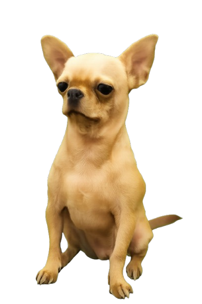

Смартик (чихуахуа)
Смартик — видатний представник породи чихуахуа, відомий своїми інтелектуальними здібностями, емпатією та надзвичайно харизматичним характером. Станом на поточний час він є об'єктом уваги завдяки своєму вмінню бездоганно виконувати команди, взаємодіяти з людьми та демонструвати унікальні поведінкові патерни. Зірка Березняків. Живе у м.Києві, Дніпровський район, масив Березняки!
Опис та зовнішній вигляд
Смартик відрізняється компактними розмірами, що повністю відповідають міжнародним стандартам породи чихуахуа. Проте, незважаючи на свої мініатюрні габарити, він володіє витривалістю та енергією, які частіше притаманні собакам середніх робочих порід. Він є яскравим доказом того кінологічного факту, що рівень інтелекту та сміливість собаки жодним чином не залежать від її розміру.
Однією з головних естетичних переваг Смартика є його чудова шерсть. Колір шерстяного покриву офіційно класифікується як соболь. Це надзвичайно приємний, рівномірний пісочно-кремовий відтінок , який візуально пом'якшує риси його мордочки та надає йому благородного вигляду.
Вокалізація: феномен хрюкання
Науковий інтерес до Смартика багато в чому зумовлений його нестандартною системою комунікації. У той час як більшість представників породи чихуахуа використовують заливистий гавкіт для вираження своїх емоцій, Смартик розробив власну аудіальну мову.
Найбільш характерною особливістю його вокалізації є те, що він зазвичай хрюкає. Цей специфічний звук Смартик видає у стані найвищого емоційного комфорту або концентрації.
Типове хрюкання Смартика під час відпочинку.
- Під час чухання животика — 89% випадків
- Після вдалого стрибка на диван — 72%
- При першому нюханні сиру — 95%
- Вранці, прокидаючись — 60%
- Коли дивляться цікавий запах — 40%
Здібності та команди
На даний момент Смартик досконало володіє кількома основними командами, що демонструють його високу дисципліну та здатність до фокусування уваги на провіднику:
- Сидіти — класична команда витримки. Смартик виконує її миттєво, фіксуючи погляд на людині.
- Лежати — виконання з будь-якого положення. Перехід з позиції стоячи в позицію лежачи займає долі секунди.
- Кружочок — артистичне виконання оберту навколо своєї осі. Ця команда вимагає хорошої координації і стала абсолютною "візитівкою" собаки перед гостями.
Засвоєна у 8-місячному віці. Виконується за словесною командою та жестом (рука вгору). Час від команди до посадки: ≈0.8 секунди. Рекорд бездоганного утримання пози — 47 секунд (до моменту, поки не відкрили холодильник).
Засвоєна у 10-місячному віці. Може виконуватися з положення сидячи або стоячи. Особливість: Смартик завжди вкладає голову між лапами — це не частина команди, просто особистий стиль.
Найвидовищніша команда. Засвоєна у 1 рік і 2 місяці. Виконується виключно за наявності ласощів у руці. Без ласощів — виконується лише після довгих переговорів та подвоєного розміру нагороди.
Біографія та ранні роки
Смартик з'являється на світ. Вже в перший день демонструє лідерські якості серед братів і сестер.
Переїзд до нового дому на Березняках. Київ отримав нового мешканця.
Перша засвоєна команда «Сидіти». Відзначено виключно позачерговою порцією сиру.
Освоєно команду «Кружочок». Перший публічний виступ перед гостями — оплески та вигуки захвату.
Отримано неофіційний титул «Абсолютного чемпіона з маскування» за вміння зливатися з ковдрою.
Смартик у розквіті сил. Повноправний член родини, філософ, мислитель і головний фахівець із сиру.
Психологічний профіль
З точки зору зоопсихології, Смартик є емоційно стабільним собакою з яскраво вираженою емпатією. Він вміє зчитувати настрій господарів: якщо в домі панує активність, він із радістю бере в ній участь; якщо ж атмосфера спокійна, він непомітно лягає поруч і виконує функцію «собаки-терапевта».
96%
78%
88%
92%
Раціон та гастрономічні звички
Окрім основного збалансованого корму, Смартик є відомим поціновувачем смаколиків. Його нюх дозволяє йому безпомилково визначати момент відкриття холодильника з іншого кінця квартири.
| Продукт | Реакція Смартика | Дозволено | Пріоритет |
|---|---|---|---|
| 🧀 Сир | Екстаз, хрюкання, танець | ✔ | ★★★★★ |
| 🍏 Яблуко | Зосереджений хрускіт | ✔ | ★★★★☆ |
| 🥩 М'ясний паштет | Повне зникнення миски | ✔ | ★★★★★ |
| 🥦 Броколі | Обнюхування, відхід | ✔ | ★☆☆☆☆ |
| 🍫 Шоколад | Дуже хоче, але... | ✘ | — |
| 🧅 Цибуля | Немає інтересу | ✘ | — |
Загальна інформація
Смартик — це не просто собака, це повноцінний член родини, філософ і мислитель у тілі чихуахуа. Його погляд на світ є глибоко прагматичним: якщо щось лежить на підлозі і смачно пахне, значить, воно належить йому; якщо щось м'яке лежить на дивані, значить, це його нове ліжко.

Смартик — 5-річний експерт з команд
| Порода | Чихуахуа |
|---|---|
| Вид | Собака свійський |
| Вік | 5 років |
| Дата народження | 5 березня |
| Колір шерсті | Соболь |
| Особливості | Часто хрюкає |
| Навички | 3 команди |
| Статус | Найкращий хлопчик |
Характер та темперамент
Характер Смартика можна описати як складний, багатогранний та аристократичний. Він справжній лев у тілі маленького собачки. Коли справа доходить до захисту своєї території (а своєю територією він вважає весь будинок і прилеглі до нього вулиці в радіусі двох кілометрів), він стає абсолютно безстрашним.
Проте в домашній, розслабленій атмосфері Смартик перетворюється на найніжнішу і найдобрішу істоту у всесвіті. Він обожнює фізичний контакт і вважає, що його законне місце — виключно на колінах, на животі або на шиї свого господаря.
🎭 Генератор настрою Смартика
Налаштуйте параметри і дізнайтеся, яким буде Смартик зараз!
Улюблені речі та хобі
Світ інтересів Смартика широкий, але є три фундаментальні речі, які складають основу його щасливого буття:
Відносини Смартика з сиром можна описати як глибоку, всеосяжну та взаємну любов. Його «сирний радар» настільки розвинений, що він здатний почути звук відкриття упаковки твердого сиру, навіть якщо в цей момент він міцно спав у сусідній кімнаті під трьома ковдрами, а телевізор працював на максимальній гучності.
Смартик визнає лише ті яблука, які дзвінко та смачно хрумтять. Сам процес поїдання яблука для нього є справжнім ритуалом. Він бере маленький шматочок, ретельно його пережовує, видаючи при цьому дуже характерний, медитативний хрускіт, який заспокоює всіх навколо.
Слово «гуляти» має в домі Смартика магічну силу. Зазвичай це слово не можна вимовляти вголос, якщо ви не плануєте негайно одягати куртку. Прогулянка для Смартика — це читання «вуличних новин»: кожен стовп, кущ і бордюр є сторінкою великого роману про життя двору.
Видатні досягнення
За свої 5 років життя Смартик встиг зібрати значну колекцію негласних нагород та титулів:
Гра: Смартик ловить кісточки
Популярність у суспільстві
Хоча Смартик не має мільйонів підписників у Instagram чи TikTok (поки що!), рівень його локальної популярності вражає. У своєму дворі він є справжньою селебріті. Сусіди знають його на ім'я, діти на майданчику часто зупиняються, щоб сказати «Який гарний песик!».
Цікаві факти (Розширено)
- Незважаючи на мініатюрність, Смартик вважає себе головним охоронцем території.
- Ім'я походить від англійського Smart (розумний).
- Хрюкання Смартика має різну тональність залежно від настрою.
- Він абсолютно не переносить, коли в його присутності пилососять.
- Смартик точно знає, в якій шухлядці лежать його ласощі.
Смартик — 4-річний експерт з команд
| Порода | Чихуахуа |
|---|---|
| Вік | 5 років |
| Дата народження | 5 березня |
| Колір шерсті | Соболь |
| Особливості | Часто хрюкає |
| Статус | Найкращий хлопчик |
🎯 Вікторина: Наскільки добре ти знаєш Смартика?
Перевір свої знання про найвидатнішого чихуахуа Березняків! Дай відповідь на всі питання і дізнайся свій результат.
Питання 1 з 6: Яка найулюбленіша їжа Смартика?
Питання 2 з 6: Скільки команд знає Смартик?
Питання 3 з 6: Де живе Смартик?
Питання 4 з 6: Яка характерна особливість вокалізації Смартика?
Питання 5 з 6: Коли народився Смартик?
Питання 6 з 6: Чого Смартик абсолютно не переносить?
🃏 Гра на пам'ять: Знайди пари
Знайди всі 6 пар карточок! Клікай на карточки, щоб їх перевернути.
Смартик — 4-річний експерт з команд
| Порода | Чихуахуа |
|---|---|
| Вік | 5 років |
| Дата народження | 5 березня |
| Колір шерсті | Соболь |
| Статус | Найкращий хлопчик |
📖 Довідка: Порода Чихуахуа
Чихуахуа — найменша з усіх офіційно визнаних порід собак у світі. Відіграє особливу роль у культурі Мексики та є однією з найдавніших порід американського континенту.
Смартик vs Стандарт породи
| Характеристика | Стандарт чихуахуа | Смартик |
|---|---|---|
| Розум | Вище середнього | Геніальний ✔✔ |
| Темперамент | Сміливий, впертий | Сміливий + артистичний |
| Відданість | Дуже висока | Абсолютна ✔ |
| Реакція на пилосос | Помірна | Критична ! |
| Вокалізація | Заливистий гавкіт | Авторське хрюкання 🐷 |
| Нюх (сир) | Стандартний собачий | Надлюдський ✔✔✔ |
📰 Щоденник Смартика
Уривки з особистого щоденника Смартика, знайденого господарями під подушкою на дивані.
🌟 Галерея титулів та нагород
📊 Статистика прогулянок
Дані зібрані за спостереженнями протягом типового місяця:
🔗 Джерела та примітки
- Особисті спостереження родини Смартика, 2022–2026 рр.
- Щоденник Смартика (знайдено під подушкою дивану)
- Ветеринарна документація клініки, м. Київ
- FCI Standard №218 — Chihuahua breed standard
- Усні свідчення сусідів двору, Березняки, Київ
Остання правка: лютий 2026 р. · Обсяг: 4 сторінки · Стан: стабільна версія
Смартик — 4-річний експерт з команд
| Порода | Чихуахуа |
|---|---|
| Вік | 5 років |
| Дата народження | 5 березня |
| Колір шерсті | Соболь |
| Статус | Найкращий хлопчик |
← Сторінка 1 (Опис)
← Сторінка 2 (Досягнення)
← Сторінка 3 (Вікторина)
→ Сторінка 5 (Далі)
🎨 Намалюй Смартика
Тут ти можеш намалювати свого Смартика! Обери колір і розмір пензля, і твори мистецтво прямо в браузері.
💡 Підказка: Намалюй вушка, носик і хвостик — і Смартик буде в захваті від свого портрету!
Смартик — 4-річний експерт з команд
| Порода | Чихуахуа |
|---|---|
| Вік | 5 років |
| Колір шерсті | Соболь |
| Статус | Найкращий хлопчик |
💬 Що думає Смартик прямо зараз?
Натисни кнопку — і дізнайся, які думки крутяться в розумній голівці Смартика в цю мить!
📊 Статистика дня Смартика
Типовий день Смартика розбитий по годинах. Натисни на годину, щоб дізнатись, чим він займається!
🎲 Генератор імені для нового друга
Якщо у Смартика з'явиться друг — яке ім'я йому підійде? Натисни, щоб дізнатись!
Смартик — 4-річний експерт з команд
| Порода | Чихуахуа |
|---|---|
| Вік | 5 років |
| Колір шерсті | Соболь |
| Статус | Найкращий хлопчик |
✏️ Кросворд: Вгадай слово про Смартика
Вгадай слова, пов'язані зі Смартиком! Введи відповідь і натисни «Перевірити».
Смартик — 4-річний експерт з команд
| Порода | Чихуахуа |
|---|---|
| Вік | 5 років |
| Колір шерсті | Соболь |
| Статус | Найкращий хлопчик |
🐾 Симулятор прогулянки зі Смартиком
Уяви, що ти вийшов гуляти зі Смартиком! Роби вибори — і дізнайся, як відреагує Смартик.
🦮 Факти про прогулянки
Смартик — 4-річний експерт з команд
| Порода | Чихуахуа |
|---|---|
| Вік | 5 років |
| Колір шерсті | Соболь |
| Статус | Найкращий хлопчик |
🎵 Музична шкатулка Смартика
Натисни на кнопки, які звуки Смартик обожнює, а від яких тікає під ліжко!
🎹 Зіграй мелодію для Смартика
Клікай на клавіші, щоб зіграти мелодію! Смартик дуже любить музику (якщо це не пилосос).
🎼 Улюблені «жанри» Смартика
🥄 Звук відкриття баночки з кормом · 🧀 Хрускіт упаковки сиру · 📢 Голос господарів після довгої відсутності · 🎾 М'яч, що стрибає по підлозі · 🚪 Звук ключів у дверях (господарі прийшли!)
📺 Телевізор на середній гучності · ☔ Дощ за вікном · 🎸 Гітара (якщо не занадто гучно) · 🌬 Вітер · 🚗 Машини на вулиці (звик)
🧹 ПИЛОСОС (будь-який, будь-де, будь-коли) · 💥 Феєрверки та петарди · ⚡ Грім · 🔔 Дверний дзвінок (хто там?!) · 🎆 Святкові хлопавки
Смартик — 4-річний експерт з команд
| Порода | Чихуахуа |
|---|---|
| Вік | 5 років |
| Колір шерсті | Соболь |
| Статус | Найкращий хлопчик |
💌 Зроби листівку для Смартика
Напиши Смартику листа — і отримай листівку, яку можна роздрукувати або зберегти!
🏁 Підсумок: Смартик у цифрах
Весь цей сайт — лише мала частина того, яким неймовірним є Смартик. Але ось головне у цифрах:
Він хрюкнув від задоволення і зробив кружочок у знак подяки.
🐾 🧀 ❤️
Остання правка: лютий 2026 р. · Обсяг: 10 сторінок · Стан: стабільна версія
Смартик — 4-річний експерт з команд
| Порода | Чихуахуа |
|---|---|
| Вік | 5 років |
| Дата народження | 5 березня |
| Колір шерсті | Соболь |
| Статус | Найкращий хлопчик |